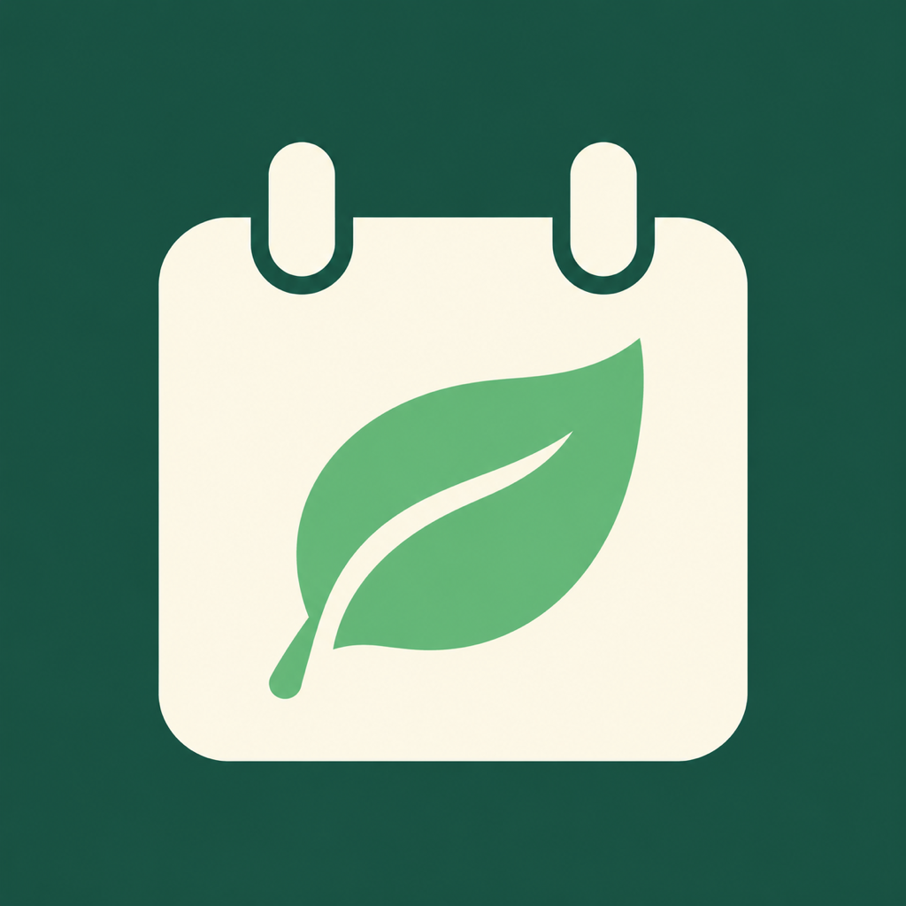
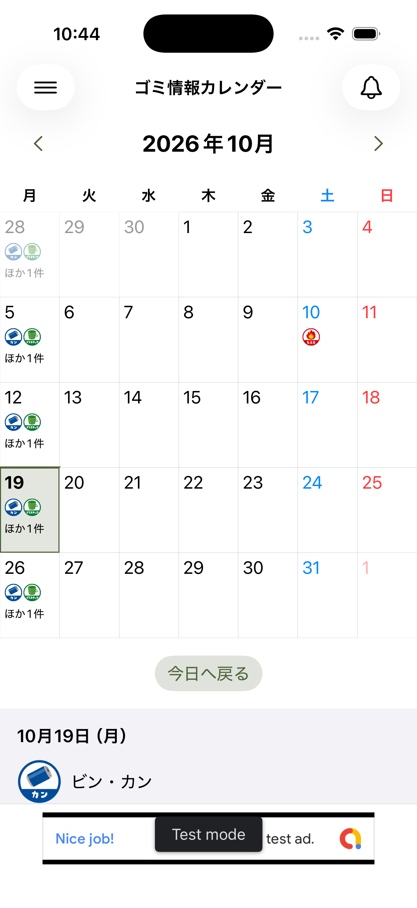
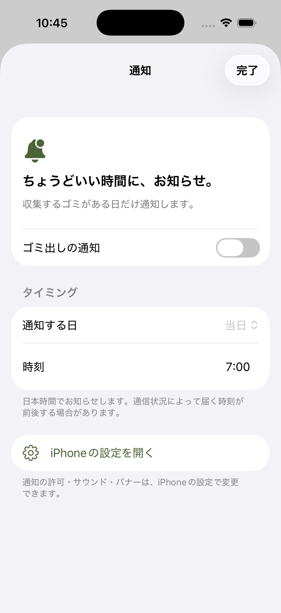

開かなくても、わかる。
ホーム画面のウィジェットに、今日または明日の収集予定を。出かける前に、さっと確認できます。

ゴミ出しカレンダー暮らしに、小さな安心を。
「明日は何ゴミだっけ？」を、ひと目で。
わが家の収集日を、いつも手元に。
ゴミ出しが、すこし気楽になるカレンダーです。
カレンダー・ウィジェット・通知でお知らせ

YOUR EVERYDAY, SIMPLIFIED
忙しい朝も、くつろぐ夜も。
必要なときに、必要な収集予定がわかります。
燃えるゴミも、資源ゴミも。
登録した収集予定を、月ごとのカレンダーで確認。
ホーム画面のウィジェットに、今日または明日の収集予定を。出かける前に、さっと確認できます。
前日の夜でも、当日の朝でも。自分の暮らしに合った時刻に、収集予定をお知らせします。

MAKE IT YOURS
近くの収集予定を使っても、自分で登録しても。
いつものゴミ出しを、あなたのカレンダーに。
ほかの人が登録した、近くの収集予定を探せます。自治体の案内と確認して利用しましょう。
ゴミの種類や収集日は、自分で登録・編集できます。地域のルールに合わせて設定。
前日・当日から、都合のよい時刻を選択。収集予定がある日だけ通知します。
※共有されている収集予定は、自治体などの最新の収集案内と照らし合わせてご利用ください。祝日・年末年始などの変更にもご注意ください。
QUESTIONS & ANSWERS
はい。ゴミの種類と収集日を自分で登録・編集できます。お住まいの自治体の収集案内を確認して設定してください。
収集日の前日または当日から、好きな時刻を設定できます。通知を受け取るには、iPhone側でアプリの通知を許可してください。
ウィジェットをホーム画面に追加すると、今日または明日の収集予定を確認できます。
通常と収集日が変わることがあるため、自治体の最新の案内をご確認ください。必要に応じて、登録している予定を見直してください。
READY FOR TOMORROW
ゴミ出しカレンダーで、毎日に小さな余裕を。
App Storeで見る ↗